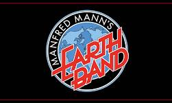

Manfred Mann

Manfred Mann var en brittisk rockgrupp bildad i London 1962 av keyboardisten Manfred Mann. Senare ledde Mann den framgångsrika 1970-talsgruppen Manfred Mann's Earth Band. Gruppen Manfred Mann hade två sångare: Paul Jones från 1962 till 1966 och Mike d'Abo från 1966 till 1969. Den var stor under Swinging London-perioden på 1960-talet men upplöstes sent 1969.